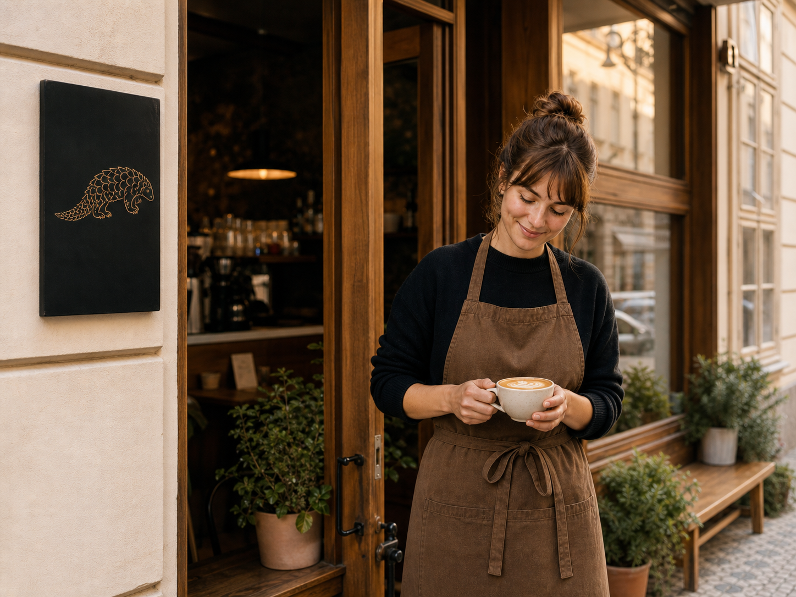
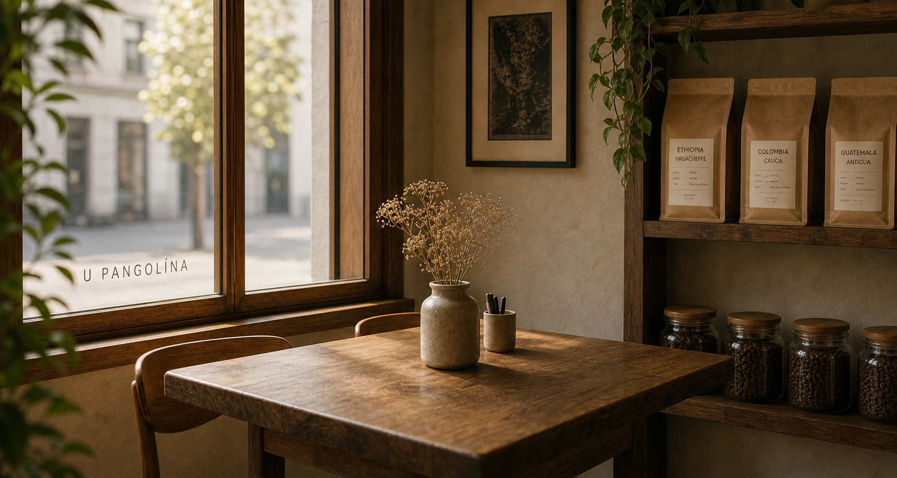
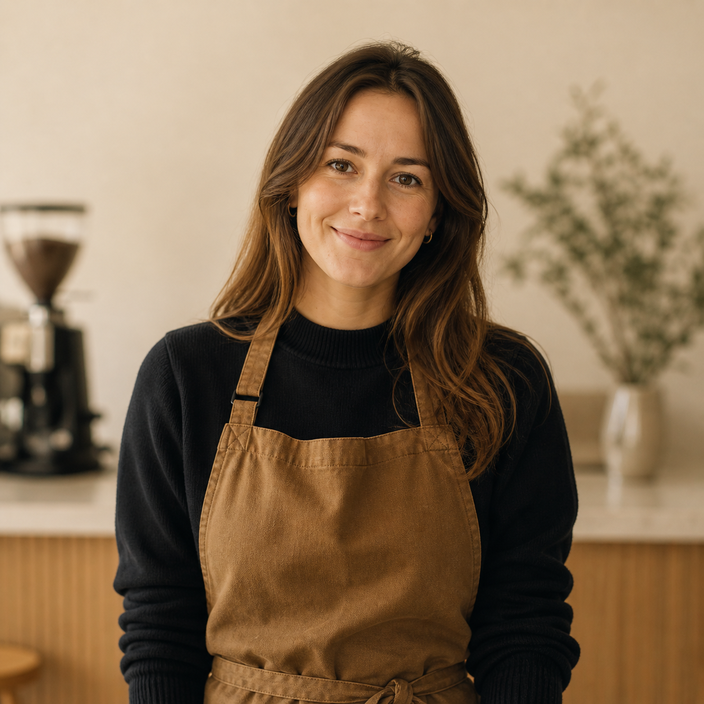
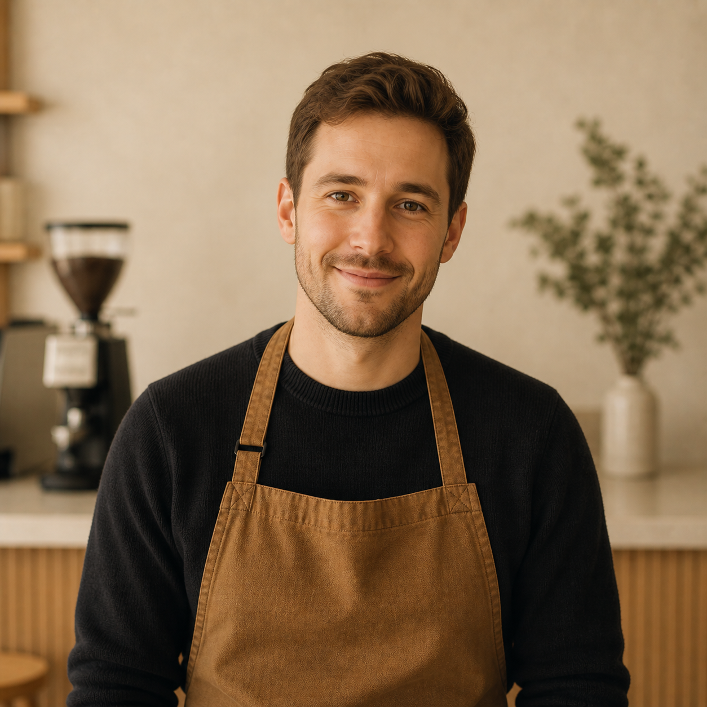
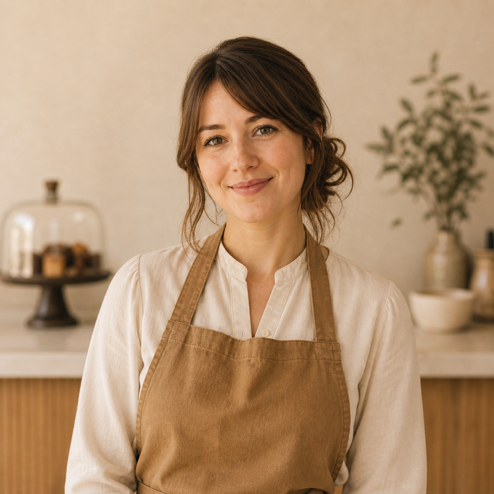

Kvalita
Pečlivý výběr zrn
Spolupracujeme s lokálními pražírnami, které sdílejí náš důraz na chuť, čerstvost a férový přístup. Kávu pravidelně obměňujeme podle sezóny, aby bylo pořád co objevovat.
O nás
Malá kavárna s velkým srdcem, kterou jsme otevřeli v roce 2019 uprostřed Vinohrad.
Jak to začalo
Kavárnu U Pangolína založila Tereza Horáková po třech letech strávených ve specialty coffee scéně v Berlíně a Vídni. Do Prahy chtěla přinést místo, kde se poctivá káva potkává s přirozenou pohostinností a domácí atmosférou.
Pangolín — vzácné, tiché a často přehlížené zvíře — se stal symbolem toho, co hledáme i v kávě: skrytou hodnotu, která se naplno ukáže až s péčí, trpělivostí a pozorností k detailu.

Hodnoty
Tři principy, které se promítají do každého šálku, každého talíře i každého rozhodnutí.
Kvalita
Spolupracujeme s lokálními pražírnami, které sdílejí náš důraz na chuť, čerstvost a férový přístup. Kávu pravidelně obměňujeme podle sezóny, aby bylo pořád co objevovat.
Komunita
Chceme být víc než zastávka na kávu. Pořádáme tasting večery, workshopy a malé kulturní akce. Rádi propojujeme sousedy, lokální umělce i další malé podniky z okolí.
Udržitelnost
Věříme, že i malé kroky mají smysl. Kompostujeme kávovou sedlinu, používáme znovu plnitelné obaly a hledáme cesty, jak omezovat odpad bez zbytečných kompromisů.

Prostor
Najdete nás v přízemí secesního domu v Mánesově ulici na Praze 2. Velká okna, dřevěný nábytek, klidná atmosféra a vůně čerstvě připravené kávy — přesně tak, jak to máme rádi.
Uvnitř máme 24 míst k sezení a od dubna do října také 8 míst venku. Kavárna je bezbariérová a otevřená všem, kdo si chtějí na chvíli odpočinout, pracovat nebo se potkat s přáteli.
Jak se k nám dostatTým
Jsme malý tým, který spojuje láska ke kávě, dobrému jídlu a poctivé pohostinnosti.

Zakladatelka & hlavní baristka
Vystudovala VŠCHT a specialty coffee scénu poznala v Berlíně. Nejraději připravuje filtrovanou kávu a ráda objevuje nové fermentované procesy.

Barista & latte art
Vítěz Latte Art Czech Championship 2022. Každý den hledá nové vzory v mléčné pěně a své zkušenosti předává na našich workshopech.

Kuchyně & dezerty
Vyučená cukrářka, která věří, že dezert má mít stejnou péči jako dobrá káva. Nabídku mění každý týden podle sezóny a vlastní inspirace.